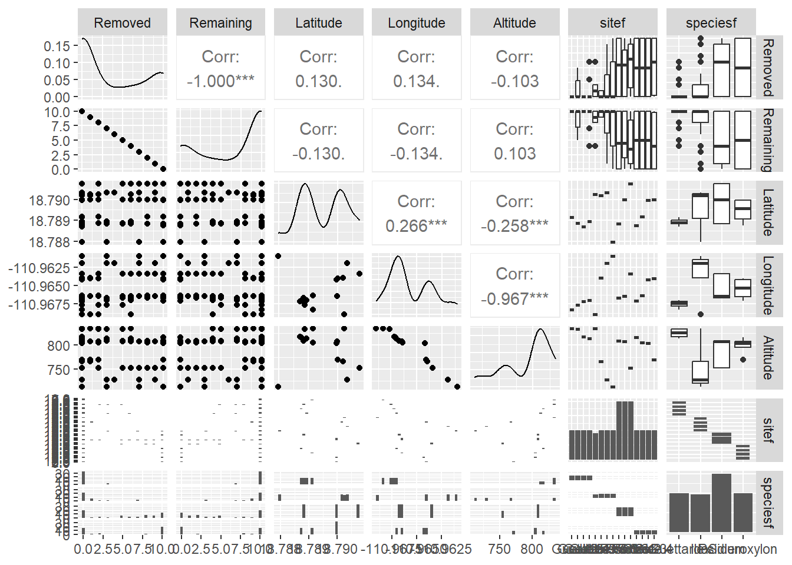
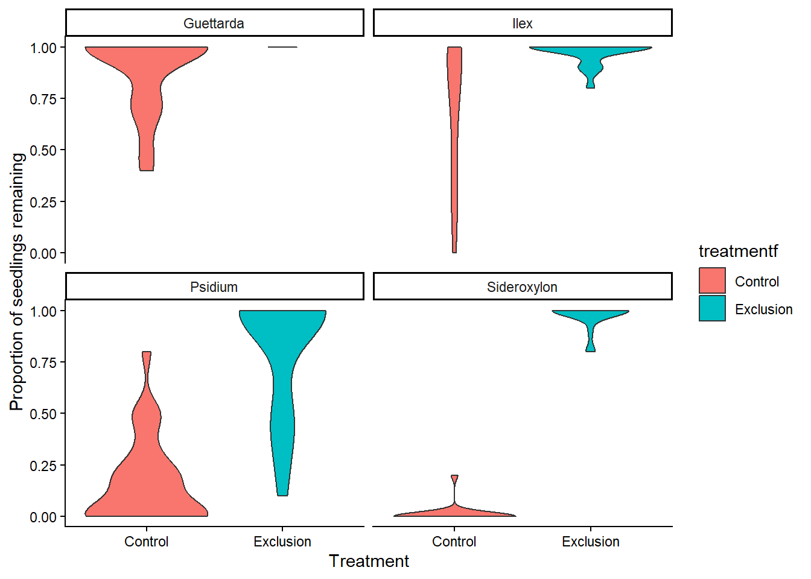
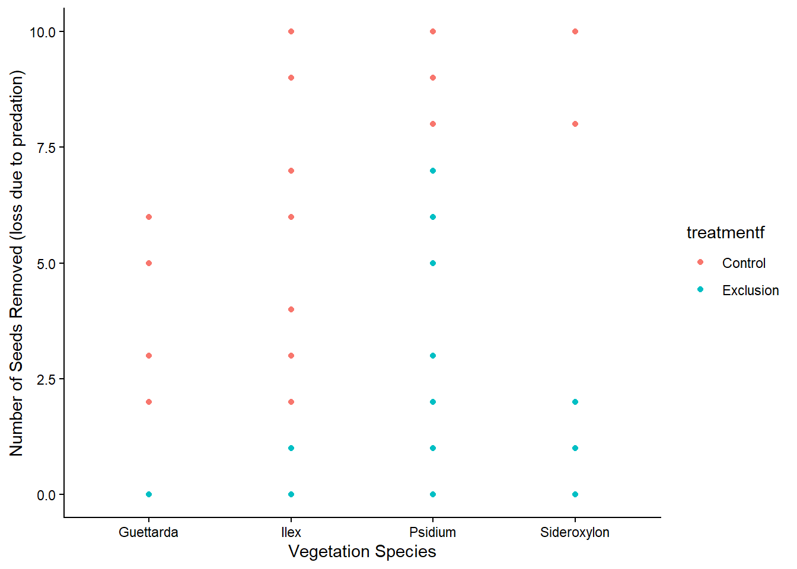
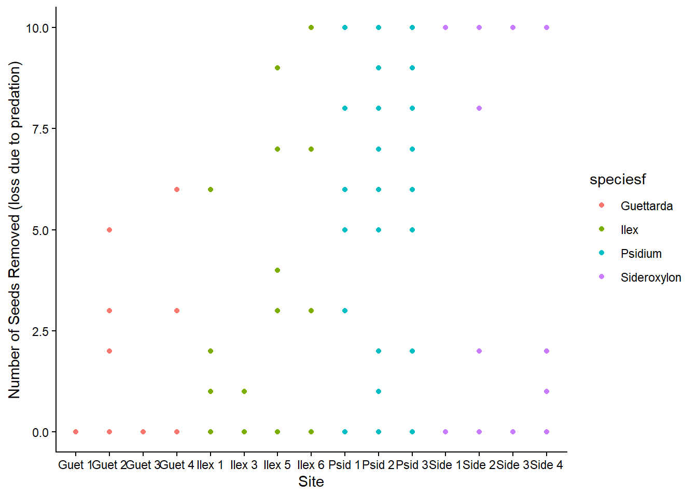
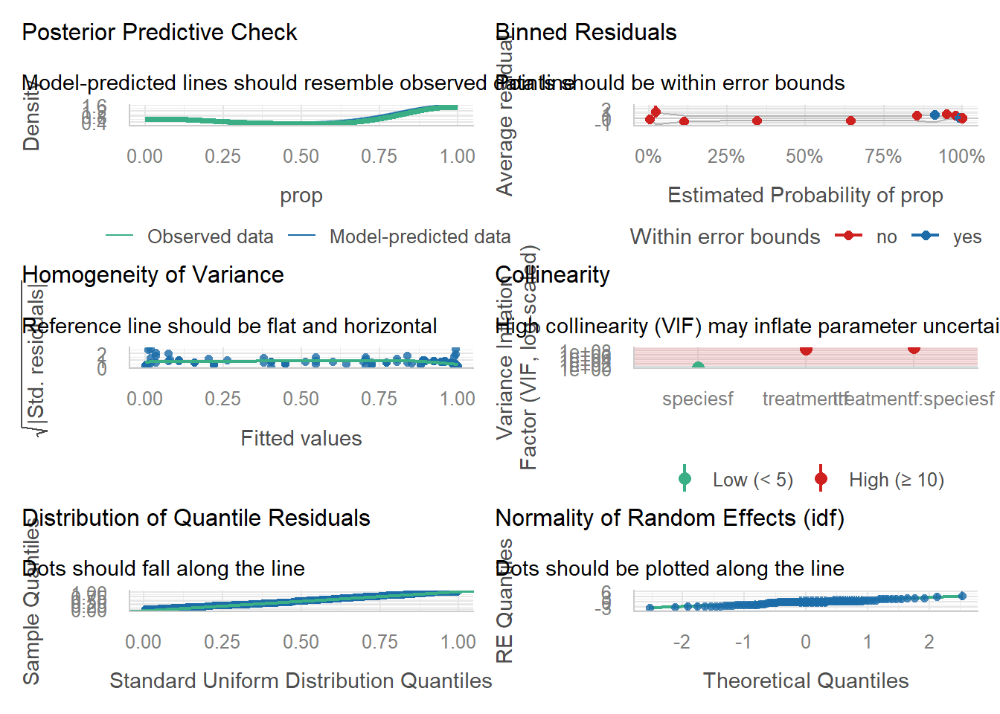
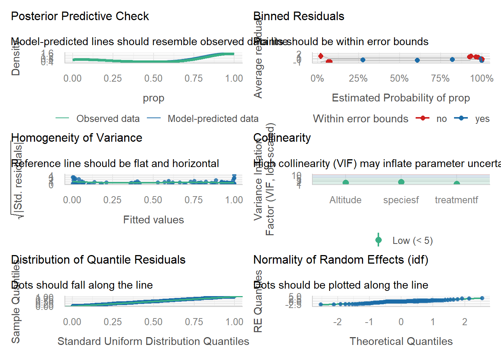

The goal of this assignment is to apply the tools and approaches we’ve learned during this course to critique, and then expand on, a statistical analysis.
Please submit this assignment via GitHub by 2 November.
Read & reflect
Read the article “Do native land crabs hinder forest regeneration on Socorro Island?” (Luna-Zuniga et al. 2025). Describe: [2 pt]
The primary question(s) the authors are trying to answer. There were three main objectives from this paper: to identify recruitment of tree species, to access recruitment variation across forest types in the island, and to experimentally test is land crabs are affecting this recruitment.
The experimental and sampling design. Sampling events to described the vegetation by forest type, species, and categorical description of life stages were conducted in 2023 and 2024. A total of 18 plots were evaluated for species type, life stage of seedling, sapling, and adult), perimeter at breast height to gain diameter at breast height. This data would be compared to a similar study conducted in 1993-1995.
An experimental design was utilized to examine the land crab impact on seedlings by means of predation. A paired cage exclusion design was created. There were 17 sites and each site had 10 paired cages (control and exclusion). However, not all species of vegetation were presented at the sites equally due to a limitation in seed availability. Not all species were tested in the same year as well. In these cages the counts of seedlings, were evaluated after set time intervals to determine germination and survival percentages within each cage.
The statistical approach used. Two generalized mixed models were used with a negative binomial distribution to access 1. vegetation structure of species at differing life stages and forest types and 2. predation and survival of seedlings when the land crab J. oceanica was present vs. absent. Predation of seedlings response variable was created into a proportion of seedlings remained/10(total seeds to start).
Imagine you are reviewing this manuscript prior to its publication. Provide a constructive critique of the statistical analyses as they relate to the experimental and sampling design. What did they do well? What would be improved? [3 pt] I think that it is interesting that they did not consider time in their model for either GLMM they created. For the first GLMM looking at vegetation structure, would be harder as there are only 2 plots that were completed in November 2024, which is not enough replicates during an individual time interval. Also that additional sampling period in 2024 does not even cover all three types or forest as it only was preformed in TDF. I would encourage the removal of those two replicates as time could not be considered in that model due to having low replicates.
Secondly, for the predation of crab GLMM, the authors do not use all species in each year, which is more of a problem within the experimental design itself. I would have a question about which forest type were the plots placed in because that may be an interaction with species type that may need to be considered in the model. If they are using different forest types in their experimental design, I would think they would have less replicates than they are presenting or some type of nested design in their model would need to be considered. In terms of dealing with differences in the number of species used in the replicates I would encourage the authors to add species as a random effect as well to account for the differences within them. Additionally, I would encourage the forest type to be added as a random variable in the model. it is not even added in the dataset for the predation experiment. Forest type could be added as a random variable as it is not independent of every site, meaning the variance between different forest types may impact the proportion of seedling predated on.
Re-analysis
The data associated with this paper are available here: https://figshare.com/articles/dataset/Luna-Zuniga_etal_Regeneration_Socorro-Island_xlsx/29144249/1?file=54804050. Note that the file has several header lines; remove these in Excel prior to importing the data into R or use readxl.
Based on your critique of the statistical approach taken by Luna-Zuniga et al. (2025), re-analyze the data to evaluate the effect of Johngarthia oceanica on the structure and composition of these island forests, specifically focusing on the seed predation experiment.
Use the code chunk below to load packages and the data. [0.5 pt]
#look for colinearlityGGally::ggpairs(dat[, 6:12]) #species and site look to be co linear

Data exploration
Explore the data visually using ggplot2. [0.5 pt]
fig1 <-ggplot(dat, aes(x = treatmentf, y = prop, fill = treatmentf))+geom_violin()+facet_wrap(~ speciesf)+labs(x ="Treatment",y ="Proportion of seedlings remaining" )+theme_classic()print(fig1)

fig2 <-ggplot(dat, aes(x = speciesf, y = Removed, color = treatmentf))+geom_point()+labs(x ="Vegetation Species",y ="Number of Seeds Removed (loss due to predation)" )+theme_classic()print(fig2)

fig3 <-ggplot(dat, aes(x = sitef, y = Removed, color = speciesf))+geom_point()+labs(x ="Site",y ="Number of Seeds Removed (loss due to predation)" )+theme_classic()print(fig3)

Model development
Based on the experimental and sampling design, which variables should be considered as fixed effects? Which could be considered as random effects? What distributions should be considered? [1 pt]
Depending on how we choose to categorize our response variable the distributions could be different: 1. counts: poisson or negative binomial 2. proportion: binomial (what was done in the paper) For the sake of comparing the model made in the paper, I will evaluate using a binomial distribution so the response variables are the same.
Develop a set of generalized linear mixed-effects models that reflect the structures described above. Include a model that includes the same response variables as Luna-Zuniga et al. (2025). [1 pt]
m0 <-glmmTMB(prop ~ treatmentf, data = dat, family =binomial(link ="logit"), weights = Total_seeds) #base modelsummary(m0) #standard errors are a magnitude lower than the estimates
m1 <-glmmTMB(prop ~ treatmentf*speciesf, data = dat, family =binomial(link ="logit"), weights = Total_seeds)#treatment and species as a main effects and interactionsummary(m1) #exclusion treatment standard error is high same with exclusion treatment with species as an interaction. There is a very low z value between exlusion and species, thus there is likely not an interaction that exists between treatment and species.
m3 <-glmmTMB(prop ~ treatmentf + speciesf + (1|sitef), data = dat, family =binomial(link ="logit"), weights = Total_seeds) #site will affect interceptsummary(m3) #when the interaction is removed the standard error for treatment exclusion gets a lot better.
m4 <-glmmTMB(prop ~ treatmentf + speciesf + (1|idf), data = dat, family =binomial(link ="logit"), weights = Total_seeds) #the random effect of the paired plot design will affect the interceptsummary(m4) #getting lower AIC values compared to the previous model
m5 <-glmmTMB(prop ~ treatmentf + speciesf + (1|sitef) + (1|idf), data = dat, family =binomial(link ="logit"), weights = Total_seeds) #site is not a fixed effect due to species with site not being independent. idf is added to look at the non indepence of the paired plot design and both of these variables affect on the outcome of proportion of seedlings predated intercept summary(m5) #AIC did not get better but the standard errors still look good.
m6 <-glmmTMB(prop ~ treatmentf + speciesf + (1|sitef/treatmentf), data = dat, family =binomial(link ="logit"), weights = Total_seeds)#nested design of site effects on intercept and treatment within site on intercept instead of using site id summary(m6) #standard errors are the same order of magnitude for individual species
m8 <-glmmTMB(prop ~ treatmentf + speciesf + Altitude + (1|sitef/treatmentf), data = dat, family =binomial(link ="logit"), weights = Total_seeds) #adding in the nested design of the experiment with altitude summary(m8) #standard error for each species and the intercept is the same order of magnitude as the estimate
m9 <-glmmTMB(prop ~ treatmentf + speciesf + Altitude + (1|idf), data = dat, family =binomial(link ="logit"), weights = Total_seeds)summary(m9)#standard errors were better when idf was used instead of breaking up with the nested design.
#m2 has the lowest AIC, which is the paper's model. Continuing to now check the model diagnostics. Since the standard errors were really high in this model I am also going to look at m9 in the diagnostics to comapred which one may fit better with the data.
Check your model diagnostics (i.e., are the model assumptions met) using an approach covered as part of this class. [1 pt]
#paper's model check_model(m2) #lots of the residuals fall out of the estimate probability proportion. The homogeneity of variance is also not the best as it gets really bad towards the end values. VIF is high for fixed variables with the interaction for treatment:species.

#model 9 (my model)check_model(m9) #there are less values in the average residuals that fall out of the estmiated probability of proportions. VIF is low. The homogeneity of variance still deviates at the extremes but is better when looking at the lower extreme compared to m2.

Which model would you choose as your final model? Why is that model preferred over the others? [1 pt] i am going to choose m9 as my preferred model. While compared to m2 it has a lower AIC value, I feel that this model reflects the data better as the standard errors are lower meaning that they will reflect true values and assumptions of the model better. Also when compared the performance of both models, m9 had VIF values that were low, a slightly better homogeneity of variance and more of the predicted proportion of the standarized residuals fell within the predicted range. Thus, I would be more confident that m9 reflects the data better than the papers model m2.
Generate model predictions (using the ggeffects package) and plot the predictions over observed data. Describe your results. [1.5 pt]
pred <- ggeffects::predict_response(m9, terms =c("treatmentf", "speciesf"))print(pred)
# Predicted probabilities of prop
speciesf: Guettarda
treatmentf | Predicted | 95% CI
-----------------------------------
Control | 0.94 | 0.86, 0.98
Exclusion | 1.00 | 1.00, 1.00
speciesf: Ilex
treatmentf | Predicted | 95% CI
-----------------------------------
Control | 0.86 | 0.68, 0.94
Exclusion | 1.00 | 1.00, 1.00
speciesf: Psidium
treatmentf | Predicted | 95% CI
-----------------------------------
Control | 0.07 | 0.04, 0.14
Exclusion | 0.94 | 0.88, 0.97
speciesf: Sideroxylon
treatmentf | Predicted | 95% CI
-----------------------------------
Control | 0.07 | 0.03, 0.14
Exclusion | 0.93 | 0.86, 0.97
Adjusted for:
* Altitude = 808.00
* idf = NA (population-level)
#I don't know why it keeps wanting to put the observed values higher than the 100% scale.
##Results in cages that were subjected to predation by the land crab, the Psiduim and Sideroxylon species were significantly predated on compared to the exclusion plots. Thus the proportion of remaining seeds were significantly lower in the control plots compared to the exclusion plots for these species.
Conclusions
How do your results compare to those presented by Luna-Zuniga et al. (2025)? [1 pt] Compared to the paper’s model, we found the same species were negatively affected by the predation of the land crabs. As well as that the exclusion treatment was significantly different from the control treatment terms of the proportion of seedling remained.
Provide summary statements about the quality of your analysis, including any potential limitations or caveats. [1 pt] i would say a limitation of my analysis came from understanding how they set up their sites in terms of where they were distributed between one another. It was unclear if the sites for the same species were next to each or placed randomly within the different forest types. Altogether this analysis has limitions out of my control with factors like year, forest type, and varying replicate size that were out of my control. A caveat is that I tried to account for varying replicate sizes in the random effects by having site be a larger level as there were differing numbering of replicates within each site and species. I would say a lot of the limitations in this study came simply from how the methods were set up, making the stats harder to accomplish because I feel that all of the these species can be compared in confidence since each species was treated as an independent experiment. Rather if a model was created for each species, analysis may have been stronger in making conclusions about how the paired plots and forest type impacts seed predation.
AI statement
If you used AI for this assignment, please describe your use, including:
1. What tool or service did you use? Copilot
2. What was the specific purpose or use? I was trying to create a jitter for the raw data being shown, but it was still overlapping the data and not presenting it how I wanted it. I was using geom_jitter instead of putting it in the plot(pred, showdata) argument.
3. How did this use enhance your understanding of the topic/code? The limitations that plot(pred) has on visualizing data, and maybe with more complex dta ggplots would just be easier to manipulate how I want to visualize the data.